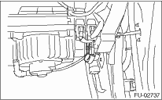

CAUTION:
• Before removing the fuel pressure gauge, release the fuel pressure.
• Be careful not to spill fuel.
• Catch the fuel from hoses using a container or cloth.
NOTE:
If the fuel pressure is out of specification, check or replace the fuel pump and fuel delivery line.
1. Release the fuel pressure. 
2. Disconnect the fuel delivery hose from the fuel damper, and connect the fuel pressure gauge.
3. Connect the connector of fuel pump relay.

4. Start the engine.
5. Measure the fuel pressure after warming up the engine.
Fuel pressure:
Standard:
340 — 361 kPa (3.5 — 3.7 kgf/cm2, 49 — 52 psi)
NOTE:
The fuel pressure gauge registers 10 to 20 kPa (0.1 to 0.2 kgf/cm2, 1 to 3 psi) higher than standard values during high-altitude operations.
NOTE:
If out of specification, check or replace the pressure regulator and pressure regulator vacuum hose.
1. Remove the collector cover.
2. Release the fuel pressure.
3. Disconnect the fuel delivery hose from the fuel damper, and connect the fuel pressure gauge.
4. Connect the connector of fuel pump relay.
5. Start the engine.
6. Measure the fuel pressure while disconnecting pressure regulator vacuum hose from intake manifold.
Fuel pressure:
Standard:
284 — 314 kPa (2.9 — 3.2 kgf/cm2, 41 — 46 psi)
7. After connecting the pressure regulator vacuum hose, measure the fuel pressure.
Fuel pressure:
Standard:
230 — 260 kPa (2.35 — 2.65 kgf/cm2, 33 — 38 psi)
NOTE:
The fuel pressure gauge registers 10 to 20 kPa (0.1 to 0.2 kgf/cm2, 1 to 3 psi) higher than standard values during high-altitude operations.